Funzioni a due variabili, che hanno come dominio R^2 e come codominio R.
Viene presa una coppia (x, y) e viene restituito un unico valore z.
Questi abbinamenti vengono visualizzati dal punto di vista geometrico come una superficie, ovvero un oggetto bidimensionale immerso in un mondo tridimensionale, simile ad un foglio di carta piegato.
Non puoi rappresentare solidi perché ti servirebbe avere più valori con lo stesso (x, y), e ciò andrebbe contro la definizione di funzione.
Le equazioni di primo grado sono oggetti che hanno una dimensione in meno rispetto allo spazio dove vivono.
In R^2 parliamo di rette, in R^3 parliamo di piani.
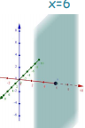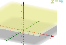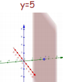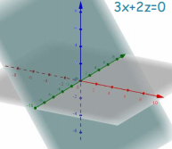
In R^3 le rette si ottengono come l'intersezione di due piani.
Devi fornire un sistema con l'equazione di due piani, per fissare due delle 3 variabili.
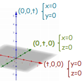
Tutte le funzioni che conosciamo continuano ad avere gli stessi requisiti, per esempio le razionali fratte richiedono un denominatore diverso da 0.
La differenza è semplicemente che nella condizione di esistenza possiamo trovare un'equazione a due variabili, che potrebbe rappresentare lo spazio all'interno o al di fuori di una circonferenza, oppure lo spazio sotto una parabola, ecc.
Il dominio non è più un semplice segmento di valori
Una funzione f: A \subseteq R^2 \to B \subseteq R è limitata se la sua immagine Im(A) è un insieme limitato.
Come sempre, per avere simmetria, il dominio inanzitutto deve essere simmetrico, o non riusciresti a trovare un -x per ogni x.
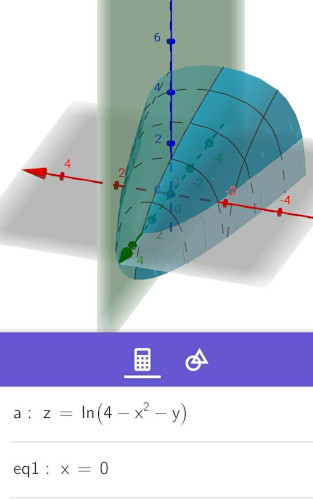 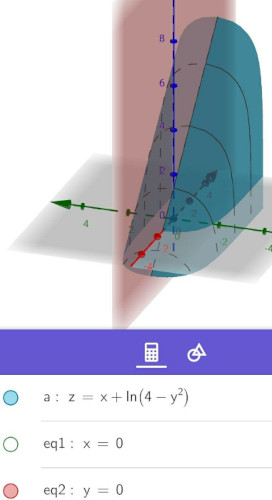
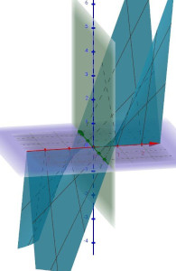
Per trovare l'intersezione di una funzione a due variabili basta mettere a sistema z = f(x, y) con l'equazione del piano che la funzione deve intersecare.
Significa vedere in quali punti il piano e la superficie si toccano.
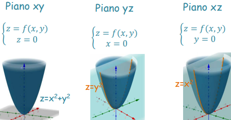
Data una funzione f: R^2 \to R si dice curva di livello il luogo dei punti per cui f(x, y) = k, ovvero si sta considerando solo una certa altezza, un piano z = k della funzione.
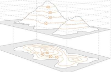
Sia P_0(x_0, y_0) punto di accumulazione del dominio di f.
Usiamo la distanza per ridefinire l'operazione di limite in R^2.
\lim_{(x, y) \to (x_0, y_0)} f(x, y)= l \quad se \quad \forall \epsilon > 0 \exist \delta_{\epsilon}: ||P-P_0|| < \delta_{\epsilon} \implies |f(x, y) - l| < \epsilon
Noi vogliamo verificare che la funzione, tendendo a un determinato punto P_0, si avvicini sempre di più a l.
Quindi prendiamo un valore positivo e piccolissimo chiamato \epsilon. Per ogni possibile \epsilon dobbiamo riuscire a trovare un intorno circolare I di raggio \delta_{\epsilon} sul punto P_0 tale che, applicando f a un qualsiasi punto di I \setminus P_0 si ottenga un risultato con una distanza da l minore di \epsilon.
In R^2 si può tendere a P_0 da un infinità di direzioni diverse... Ognuna deve dare lo stesso risultato o il limite non esisterebbe. Quindi diciamo che
\lim_{(x, y) \to (x_0, y_0)} f(x, y)= l \iff \lim_{(x, y) \to (x_0, y_0)} f(x, y)|_X = l
\forall X \subseteq A, con P_0 punto di accumulazione per X
Il limite deve dare sempre lo stesso risultato anche quando restringiamo il dominio di f a tutti i sottoinsiemi possibili con P_0 come punto di accumulazione. Così, inevitabilmente si stanno verificando tutte le possibili direzioni.
\lim_{(x, y) \to (x_0, y_0)} f(x, y) = l \quad se \quad \forall M > 0 \exist \delta: ||P-P_0|| < \delta \implies |f(x, y)| > M
Le seguenti proprietà continuano a essere valide poiché non sono legate all'ordinamento:
Le seguenti proprietà sono valide poiché sono legate all'ordinamento sul codominio, R, che continua a essere ordinato:
Il concetto di continuità rimane identico per le funzioni R \to R^2.
Il limite per la variabile che tende a un certo punto deve essere uguale alla funzione calcolata in quel punto.
f: A \subseteq R^2 \to R è continua nel punto P = (x_0, y_0) se
P \in A \land \lim_{(x, y) \to (x_0, y_0)} f(x, y) = f(x_0, y_0)
Questa proposizione non può essere 'esplosa' come abbiamo fatto per le funzioni R \to R. Infatti, li potevamo espandere il limite come limite destro = limite sinistro. Adesso non lo possiamo più fare, ma comunque il limite per esistere deve dare lo stesso risultato quando è calcolato da tutte le direzioni possibili.
Quindi non possiamo nemmeno elencare i tipi di discontinuità come abbiamo per le funzioni in R.
La funzione è continua in un I \subseteq A se I è chiuso e se la funzione è continua \forall P \in I.
Il sottoinsieme deve essere chiuso per avere la garanzia che riusciremo ad avvicinarci a P da ogni direzione senza uscire dal sottoinsieme.
Dubbio: Non dovrebbe essere un sottoinsieme aperto? Se I è chiuso come fai ad avvicinarti agli estremi?
Il teorema di Weierstrass si applica anche alle funzioni in R^2, con il requisito aggiuntivo che l'insieme sia connesso.
La funzione continua in I \subseteq A connesso, chiuso e limitato ammette massimo e minimo in I.
Il corollario ci dice che la funzione assume tutti i valori tra il massimo e il minimo.
Possiamo avvicinarci e allontanarci da un punto in R^2 usando un'infinità di direzioni.
Per fare la derivata di una funzione in due variabili dobbiamo decidere quale direzione usare per l'incremento.
Questa direzione viene definita con un vettore \overrightarrow{v}.
\lim_{h \to 0} \frac{f((x, y) + h\overrightarrow{v}) - f(x, y)}{h} = \\
\lim_{h \to 0} \frac{f(x + hv_1, y + hv_2) - f(x, y)}{h} = \\
Se questo limite esiste ed è finito, allora diciamo che esiste la derivata di f lungo la direzione \overrightarrow{v} e la chiamiamo \frac{\partial f}{\partial \overrightarrow{v}}, letto come 'de f in de v'. Il simbolo \partial sta proprio a indicare che stiamo facendo una derivata parziale stiamo analizzando il comportamento della superficie solo in una direzione.
L'esistenza della derivata in una direzione non implica l'esistenza della derivata verso le altre direzioni.
La funzione è derivabile in un punto se in quel punto esistono le derivate per tutte le direzioni possibili.
Limitandoci a una singola direzione stiamo tornando all'analisi della retta, da come si può capire da questa immagine:
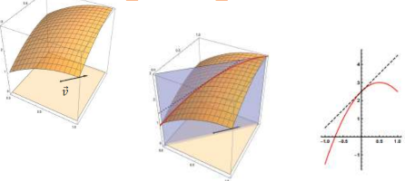
Quindi possiamo anche fare la derivata destra e sinistra, facendo tendere h a 0^+ o a 0^-.
Per comodità, possiamo decidere di derivare lungo la direzione dell'asse delle x o delle y.
Per derivare lungo l'asse delle x, ottenendo \frac{\partial f}{\partial x}:
Ponendo \overrightarrow{v} = \overrightarrow{l} = (1, 0), f((x, y) + h \overrightarrow{v}) si espande a f((x, y) + (h, 0)) = f(x + h, y)
Per derivare lungo l'asse delle y, ottenendo \frac{\partial f}{\partial y}:
Ponendo \overrightarrow{v} = \overrightarrow{j} = (0, 1), f((x, y) + h \overrightarrow{v}) si espande a f((x, y) + (0, h)) = f(x, y + h)
È comodo perché in pratica stiamo fissando una delle variabili, e possiamo considerarla come se fosse una costante. Nei calcoli la costante la trattiamo come se fosse un numero qualunque, un k.
Geometricamente, \frac {\partial f}{\partial x}(x_0, y_0) rappresenta la pendenza della retta tangente alla [curva che si ottiene dall'intersezione del grafico della funzione con il piano y = y_0] nel punto (x_0, y_0, f(x_0, y_0).
In figura, le intersezioni con i due piani y = 0 e x = 0.
Facendo che il piano arancione è x = 0, \frac {\partial f}{\partial y}(x_0, y_0) ci permette di osservare il cambiamento della superficie in quel punto se vai a muoverla un pochino verso destra.
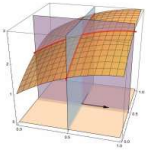
Sia la funzione f: R^2 \to R derivabile lungo gli assi x e y in un punto P.
Si definisce il seguente vettore
\nabla f(P) := (\frac {\partial f}{\partial x}(P), \frac {\partial f}{\partial y}(P))
Ovvero la coppia delle derivate parziali lungo gli assi x e y calcolate in P.
Possiamo anche scrivere solo \nabla f per lasciare la coppia di espressioni letterali che poi andremo a calcolare in un certo punto P scrivendo \nabla f(P).
Se la funzione in P è derivabile in tutte le direzioni, allora posso trovare la derivata lungo la direzione generica \overrightarrow v con la seguente formula:
\frac {\partial f}{\partial \overrightarrow v}(P) = \overrightarrow v \cdot \nabla f(P)
Siccome la parziale ci da una funzione R^2 \to R, allora anche la derivata può essere nuovamente derivata.
Abbiamo derivato f(x, y) lungo gli assi e abbiamo ottenuto le due funzioni \frac {\partial f}{\partial x}, \frac {\partial f}{\partial y}.
Cosa otterremo derivando queste due funzioni lungo gli assi x e y?
Derivando \frac {\partial f}{\partial x} lungo l'asse delle x otterremo la derivata parziale seconda di f fatta due volte rispetto a x:
\frac \partial {\partial x} \frac {\partial f}{\partial x}
Derivando \frac {\partial f}{\partial x} lungo l'asse delle y otterremo la derivata parziale seconda di f fatta una volta rispetto a x e una volta rispetto a y:
\frac \partial {\partial y} \frac {\partial f}{\partial x}
Possiamo fare lo stesso procedimento con \frac {\partial f}{\partial y}.
Quindi alla fine otterremo 4 derivate seconde. In genere tutte queste derivate sono diverse tra di loro.
La derivata seconda in cui si è derivato due volte per la stessa variabile viene chiamata derivata pura.
Sono le due derivate seconde:
\frac \partial {\partial x} \frac {\partial f}{\partial x}, \frac \partial {\partial y} \frac {\partial f}{\partial y}
Per derivate miste si intendono le derivate seconde
\frac \partial {\partial y} \frac {\partial f}{\partial x}, \frac \partial {\partial x} \frac {\partial f}{\partial y}
Ovvero la coppie di derivate in cui semplicemente è scambiato l'ordine in cui abbiamo scelto in quale asse derivare.
Il teorema di Swartz ci dice che le derivate miste sono uguali se:
Nei casi che andremo a vedere, le derivate miste saranno probabilmente uguali.
La derivabilità non implica più la continuità.
Non possiamo parlare di monotonia dato che, appunto, la funzione può essere crescente o decrescente da un'infinità di punti diversi.
Possiamo comunque trovare i valori di massimo e di minimo.
Questo perché il codominio delle funzioni R^2 \to R, ovvero R, è ordinato.
(P, f(P)) è un massimo relativo di f se esiste un intorno a P tale che la funzione in quell'intervallo sia minore o uguale al punto.
\exist I(P): f(P) \geq f(Q) \forall Q \in I(P)
Per trovare il massimo globale si dovrebbe analizzare tutti i massimi relativi e controllare i punti di frontiera.
Condizione necessaria ma non sufficiente che (P, f(P) sia un massimo o un minimo di f è che la derivata parziale rispetto a x e quella rispetto a y siano entrambe nulle.
\frac {\partial f}{\partial x}(P) = \frac {\partial f}{\partial y}(P) = 0
Questa è la prima cosa da fare per trovare i punti candidati a essere punti di massimo o di minimo.
Sia P un punto stazionario di f. Definiamo l'Hessiano di f come la matrice
H =
\begin{vmatrix}
\frac \partial {\partial x} \frac {\partial f}{\partial x} &
\frac \partial {\partial y} \frac {\partial f}{\partial x} \\
\frac \partial {\partial x} \frac {\partial f}{\partial y} &
\frac \partial {\partial y} \frac {\partial f}{\partial y} \\
\end{vmatrix}
La matrice 2x2 in cui la diagonale principale è composta dalle derivate secondarie pure di f.
La diagonale secondaria è composta dalle derivate secondarie miste di f.
La prima colonna contiene le derivate secondarie calcolate sull'asse x.
Con queste informazioni puoi facilmente ricordare l'ordine delle 4 derivate.
Calcolando il determinante di H in un punto ci può fornire informazioni utili sulla funzione in quel punto.
Il determinante di una matrice 2x2 si ottiene facendo la differenza tra il prodotto della diagonale principale col prodotto della diagonale secondaria, calcolando le derivate secondarie in P.
H(P) =
(
\frac \partial {\partial x} \frac {\partial f}{\partial x}(P)
\cdot
\frac \partial {\partial y} \frac {\partial f}{\partial y}(P)
) - (
\frac \partial {\partial x} \frac {\partial f}{\partial y}(P)
\cdot
\frac \partial {\partial y} \frac {\partial f}{\partial x}(P)
)
Trovare gli estremanti vincolati significa trovare i punti di massimo e di minimo nelle parti della funzione che rispettano un certo vincolo.
Questo metodo può essere usato quando il vincolo è un'equazione che ci permette di ricavare una variabile in termini dell'altra.
Usiamo questo metodo quando non è fattibile usare il metodo di sostituzione.
Noi comunque lo useremo solo nei casi in cui il vincolo è un'equazione, o le cose si complicherebbero.
f: A \subseteq R^2 \to B \subseteq R, \quad g: A \subseteq R^2 \to B \subseteq R \\ L(x, y, \lambda) = f(x, y) - \lambda g(x, y)
Con f la funzione che stiamo studiando, e g il vincolo per f.
\lambda è detto moltiplicatore di Lagrange, e L è la lagrangiana.
Dallo studio di L troveremo gli estremanti vincolati.
Facciamo la derivata rispetto alle 3 variabili per cercare dove valgono 0.
Facendo le derivate, ricordati di sviluppare il prodotto \lambda \cdot g, in modo da facilitarti il calcolo.
Da notare che la derivata rispetto a \lambda è uguale a g.
\begin{cases}
L'_x = 0 \\
L'_y = 0 \\
L'_\lambda = 0 \to g(x, y) = 0 \\
\end{cases}
Ogni soluzione a questo sistema sarà un punto di massimo o di minimo.
Se non riuscissimo a trovare soluzioni a questo sistema, vorrebbe dire che la funzione non ammette massimi o minimi con quel vincolo.
Il prossimo passo sarà capire quali sono i massimi e quali sono i minimi.
Si riempe la seguente matrice 3x3 con le derivate secondarie delle derivate primarie trovate nel primo passo.
H =
\begin{vmatrix}
0 & g'_x & g'_y \\
g'_x & L'_{xx} & L'_{xy} \\
g'_y & L'_{yx} & L'_{yy}
\end{vmatrix}
Come ricordarsela: 0 g'x g'y, prima colonna uguale a prima riga, Lxx Lxy, Lyx Lyy
Poi si calcola la determinante della matrice. L'algoritmo è questo:
Da notare che il primo elemento di questa matrice è zero, quindi si parte subito dal centro in alto.
f: R^2 \to R si dice differenziabile in P(x_0, y_0) se esiste una funzione lineare (piano) L(h, k): R^2 \to R tale che la funzione nel punto risulti ben approssimata dal piano.
h = x - x_0, \quad k = y - y_0 \\
L(h, k) = ah + bk = a(x - x_0) + b(y - y_0) = ax - ax_0 + by - by_0\\
f(x, y) - f(x_0, y_0) = L(h, k) + o(\sqrt{h^2 + k^2})
L(h, k) è l'equazione di un piano passante per P.
Questo piano risulta tangente alla superficie di f nel punto P. Ovvero anche nelle vicinanze del punto, la distanza tra il piano e la superficie di f risulta essere piccolissima.
Una funzione differenziabile in P:
Partiamo dalla definizione di differenziabilità.
f(x, y) - f(x_0, y_0) = L(h, k) + o(\sqrt{h^2 + k^2}) \\
Per la definizione, sinistra e destra sono uguali, quindi posso fare lo stesso limite sia sinistra che a destra.
\lim_{\substack{x \to x_0 \\ y \to y_0}} [f(x, y) - f(x_0, y_0)] = \lim_{\substack{x \to x_0 \\ y \to y_0}} [L(h, k) + o(\sqrt{h^2 + k^2})]
Sviluppiamo il limite, ricordandoci di cosa siano esattamente L, h, k.
\lim_{\substack{x \to x_0 \\ y \to y_0}} [f(x, y) - f(x_0, y_0)] = \lim_{\substack{x \to x_0 \\ y \to y_0}} [a(x - x_0) + b(y - y_0) + o(\sqrt{(x - x_0)^2 + (y - y_0)^2})] \\
\lim_{\substack{x \to x_0 \\ y \to y_0}} [f(x, y) - f(x_0, y_0)] = \lim_{\substack{x \to x_0 \\ y \to y_0}} [0 + 0 + 0] \\
\lim_{\substack{x \to x_0 \\ y \to y_0}} [f(x, y) - f(x_0, y_0)] = 0 \\
Abbiamo eliminato le moltiplicazioni per 0 e l'infinitesimo anch'esso tendente a 0.
Adesso, siccome - f(x_0, y_0) non dipende dal limite, possiamo portarla fuori applicando la differenza tra limiti e il limite per una costante.
\lim_{\substack{x \to x_0 \\ y \to y_0}} [f(x, y)] - f(x_0, y_0) = 0 \\
\lim_{\substack{x \to x_0 \\ y \to y_0}} [f(x, y)] = f(x_0, y_0) \\
Partendo dalla definizione di differenziabilità abbiamo raggiunto la definizione di continuità, quindi abbiamo dimostrato che la differenziabilità implica la continuità.
Partiamo dalla definizione di derivabilità e dimostriamo che la derivata rispetto a x esiste.
f(x + h, y + k) - f(x, y) = ah + bk + o(\sqrt{h^2 + k^2}) \\
La derivata parziale rispetto a x consiste nel variare la x e di fissare la y. Il variare della y è rappresentato da k, quindi k sarà uguale a 0 e lo possiamo eliminare.
f(x + h, y) - f(x, y) = ah + o(\sqrt{h^2}) \\
Adesso facciamo il limite per h tendente a 0, in modo da fare la derivata parziale per x.
\lim_{h \to 0} \frac{f(x + h, y) - f(x, y)}{h} = \lim_{h \to 0} \frac{ah + o(\sqrt{h^2})}{h} \\
\lim_{h \to 0} \frac{f(x + h, y) - f(x, y)}{h} = \lim_{h \to 0} \frac{ah + o|h|}{h} \\
Dobbiamo mostrare che questo limite esiste, quindi dobbiamo mostrare che la parte a destra sia un numero finito.
Scomponiamo il limite a destra.
\lim_{h \to 0} \frac{f(x + h, y) - f(x, y)}{h} = \lim_{h \to 0} \frac{ah}{h} + \lim_{h \to 0} \frac{o|h|}{h} \\
\lim_{h \to 0} \frac{f(x + h, y) - f(x, y)}{h} = \lim_{h \to 0} a + \lim_{h \to 0} \frac{o|h|}{h} \\
\lim_{h \to 0} \frac{f(x + h, y) - f(x, y)}{h} = a + \lim_{h \to 0} \frac{o|h|}{h} \\
o|h| è un infinitesimo di ordine superiore rispetto a h, quindi si avvicina più velocemente allo 0.
Lo 0 al numeratore vince, e tutto il limite vale 0.
\lim_{h \to 0} \frac{f(x + h, y) - f(x, y)}{h} = a + 0 \\
Quindi abbiamo dimostrato che la derivata parziale per x di una funzione differenziabile, esiste e dà un numero finito a.
La dimostrazione per la derivata parziale rispetto a y può essere fatta usando lo stesso procedimento ma fissando x e incrementando y.
Partiamo dalla definizione di differenziabilità con la forma dell'incremento per direzione generica.
f(x + h, y + k) - f(x, y) = ah + bk + o(\sqrt{h^2 + k^2}) = \\
f(x + hv_1, y + hv_2) - f(x, y) = ahv_1 + bhv_2 + o(\sqrt{(hv_1)^2 + (hv_2)^2}) = \\
f(x + hv_1, y + hv_2) - f(x, y) = ahv_1 + bhv_2 + o(\sqrt{h^2v_1^2 + h^2v_2^2}) = \\
f(x + hv_1, y + hv_2) - f(x, y) = ahv_1 + bhv_2 + o(\sqrt{h^2(v_1^2 + v_2^2)}) = \\
f(x + hv_1, y + hv_2) - f(x, y) = ahv_1 + bhv_2 + o(\sqrt{h^2} \cdot \sqrt{(v_1^2 + v_2^2)}) = \\
f(x + hv_1, y + hv_2) - f(x, y) = ahv_1 + bhv_2 + o(h) \cdot o(\sqrt{(v_1^2 + v_2^2)}) = \\
Sia a destra che a sinistra, dividiamo per h facciamo il limite per h \to 0.
\lim_{h \to 0} \frac{f(x + hv_1, y + hv_2) - f(x, y)}{h} = \lim_{h \to 0}\frac{ahv_1 + bhv_2 + o(h) \cdot o(\sqrt{(v_1^2 + v_2^2)})}{h} = \\
\lim_{h \to 0} \frac{f(x + hv_1, y + hv_2) - f(x, y)}{h} = \lim_{h \to 0}[av_1 + bv_2 + \frac{o(h) \cdot o(\sqrt{(v_1^2 + v_2^2)})}{h}] = \\
La frazione nel limite a destra da 0 per lo stesso motivo che abbiamo visto nella dimostrazione precedente.
o(h) è un infinitesimo di ordine superiore, quindi si avvicina più velocemente allo 0, quindi tutta la frazione da 0. La radice quadrata dei valori del vettore direzionale non influisce su questo. Abbiamo quindi
\lim_{h \to 0} \frac{f(x + hv_1, y + hv_2) - f(x, y)}{h} = \lim_{h \to 0}[av_1 + bv_2] = \\
\lim_{h \to 0} \frac{f(x + hv_1, y + hv_2) - f(x, y)}{h} = av_1 + bv_2 = \\
Abbiamo trovato quindi che esiste la derivata verso una direzione generica di una funzione differenziabile.
Inoltre abbiamo anche dimostrato la formula del gradiente per calcolare la derivata verso una qualunque direzione usando solo le derivate per x e y. Per capire perché, vai a vedere la sezione sul gradiente e la sezione sul significato di a e b.